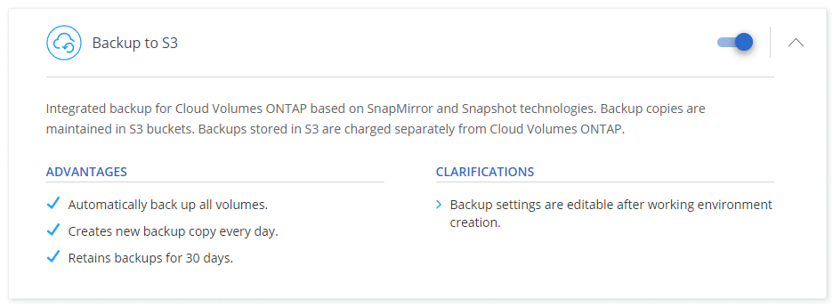

データをAmazon S3にバックアップする GitHubで編集 ドキュメントの変更をリクエストする
寄稿者
S3へのバックアップは、Cloud Volumes ONTAPのアドオンサービスであり、保護のためのバックアップおよび復元機能、およびクラウドデータの長期アーカイブを提供します。バックアップは、アカウントのS3バケットに保存され、短期間のリカバリまたはクローン作成に使用されるボリュームSnapshotコピーとは無関係です。
S3へのバックアップを有効にすると、サービスはデータの完全バックアップを実行します。追加のバックアップはすべて増分バックアップです。つまり、変更されたブロックと新しいブロックのみがバックアップされます。バックアップスケジュールは、毎日、毎週、または毎月に設定できます。
すべてのバックアップおよび復元操作にはCloud Managerを使用する必要があることに注意してください。 ONTAPまたはAmazon S3から直接実行されたアクションは、サポートされない構成になります。
クイックスタート
これらの手順に従うことですぐに開始するか、残りのセクションまでスクロールダウンして詳細を確認してください。
 構成のサポートを確認します
構成のサポートを確認します
AWSでCloud Volumes ONTAP 9.6以降を実行しています。
新しいCloud Manager Marketplaceオファリングに登録しました。
Cloud Managerにアクセス許可を提供するIAMロールには、最新のCloud ManagerポリシーからのS3アクセス許可が含まれます。
Cloud Volumes ONTAPは、VPCエンドポイントを介してS3に接続します。
 新規または既存のシステムでS3へのバックアップを有効にします
新規または既存のシステムでS3へのバックアップを有効にします
新しいシステム：S3へのバックアップは、作業環境ウィザードでデフォルトで有効になっています。オプションを有効のままにしてください。
既存のシステム：作業環境を開き、バックアップ設定アイコンをクリックしてバックアップを有効にします。

 必要に応じて、バックアップポリシーを変更します
必要に応じて、バックアップポリシーを変更します
デフォルトのポリシーは毎日ボリュームをバックアップし、各ボリュームのバックアップコピーを30個保持します。毎週または毎月のバックアップに変更するか、保持するバックアップコピーの数を変更します。
 必要に応じてデータを復元します
必要に応じてデータを復元します
Cloud Managerの上部で、[ バックアップと復元 ]をクリックしてボリュームを選択し、バックアップを選択してから、バックアップから新しいボリュームにデータを復元します。

必要条件
次の要件を読んで、S3へのボリュームのバックアップを開始する前に、サポートされている構成があることを確認してください。
- サポートされているONTAPバージョン
Cloud Volumes ONTAP 9.6以降。
- サポートされているAWSリージョン
S3へのバックアップは、Cloud Volumes ONTAPがサポートされているすべてのAWSリージョンでサポートされています。
- AWSサブスクリプションの要件
3.7.3リリース以降、新しいCloud ManagerサブスクリプションがAWS Marketplaceで利用可能になりました。このサブスクリプションにより、Cloud Volumes ONTAP 9.6以降（PAYGO）およびBackup to S3の展開が可能になります。 S3へのバックアップを有効にする前に、この新しいCloud Managerサブスクリプションをサブスクライブする必要があります。 S3へのバックアップの請求は、このサブスクリプションを通じて行われます。
- 必要なAWSアクセス許可
Cloud Managerにアクセス許可を提供するIAMロールには、最新のCloud ManagerポリシーからのS3アクセス許可が含まれている必要があります。
ポリシーからの特定の権限は次のとおりです。
{ "Sid": "backupPolicy", "Effect": "Allow", "Action": [ "s3:DeleteBucket", "s3:GetLifecycleConfiguration", "s3:PutLifecycleConfiguration", "s3:PutBucketTagging", "s3:ListBucketVersions", "s3:GetObject", "s3:ListBucket", "s3:ListAllMyBuckets", "s3:GetBucketTagging", "s3:GetBucketLocation" ], "Resource": [ "arn:aws:s3:::netapp-backup-*" ] },- S3へのVPCエンドポイント
Cloud Volumes ONTAPがS3サービスへのVPCエンドポイントを介してS3に接続していることを確認します。手順については、「 AWSドキュメント：ゲートウェイエンドポイントの作成」を参照してください。
VPCエンドポイントを作成するときは、Cloud Volumes ONTAPインスタンスに対応するリージョン、VPC、およびルートテーブルを必ず選択してください。また、セキュリティグループを変更して、S3エンドポイントへのトラフィックを有効にするアウトバウンドHTTPSルールを追加する必要があります。そうしないと、Cloud Volumes ONTAPはS3サービスに接続できません。
問題が発生した場合は、 AWS Support Knowledge Center：ゲートウェイVPCエンドポイントを使用してS3バケットに接続できないのはなぜですか？を参照してください。
新しいシステムでS3へのバックアップを有効にする
S3へのバックアップは、作業環境ウィザードでデフォルトで有効になっています。オプションを有効のままにしてください。
[ Create Cloud Volumes ONTAP]をクリックします 。
クラウドプロバイダーとしてAmazon Web Servicesを選択し、単一ノードまたはHAシステムを選択します。
[詳細と資格情報]ページに入力します。
[サービス]ページで、サービスを有効のままにして[ 続行 ]をクリックします。

ウィザードのページに入力して、システムを展開します。
S3へのバックアップはシステムで有効になっており、毎日ボリュームをバックアップし、30個のバックアップコピーを保持します。 バックアップの保持を変更する方法を学びます 。
既存のシステムでS3へのバックアップを有効にする
作業環境からいつでも直接S3へのバックアップを有効にします。
作業環境を開きます。
バックアップ設定アイコンをクリックします。
[ すべてのボリュームを自動的にバックアップする]を選択します 。
バックアップの保持を選択し、[ 保存 ]をクリックします 。
S3へのバックアップは、各ボリュームの初期バックアップの取得を開始します。
スケジュールとバックアップ保持の変更
デフォルトのポリシーは毎日ボリュームをバックアップし、各ボリュームのバックアップコピーを30個保持します。毎週または毎月のバックアップに変更でき、保持するバックアップコピーの数を変更できます。
毎日、毎週、毎月の組み合わせはサポートされていません。毎日、毎週、毎月を選択できます。
| バックアップポリシーを変更すると、今後のすべてのバックアップに影響します。作成された以前のバックアップには影響しません。 |
作業環境を開きます。
バックアップ設定アイコンをクリックします。
スケジュールとバックアップの保持を変更し、[ 保存 ]をクリックします 。
ボリュームの復元
バックアップからデータを復元すると、Cloud Managerは新しいボリュームへのフルボリューム復元を実行します。データを同じ作業環境またはソース作業環境と同じAWSアカウントにある別の作業環境に復元できます。
Cloud Managerの上部にある[ バックアップと復元 ]をクリックします。
復元するボリュームを選択します。
![バックアップがあるボリュームを示す[バックアップと復元]タブのスクリーンショット。](./media/screenshot_backup_to_s3_volume.gif)
復元するバックアップを見つけて、復元アイコンをクリックします。

ボリュームを復元する作業環境を選択します。
ボリュームの名前を入力します。
復元をクリックします。

S3へのバックアップの無効化
S3へのバックアップを無効にすると、システム上の各ボリュームのバックアップが無効になります。既存のバックアップは削除されません。
作業環境を開きます。
バックアップ設定アイコンをクリックします。
すべてのボリュームの自動バックアップを無効にし、[ 保存 ]をクリックします 。
S3へのバックアップの仕組み
次のセクションでは、S3へのバックアップについて詳しく説明します。
バックアップが存在する場所
バックアップコピーは、Cloud ManagerがAWSアカウントに作成するS3バケットに保存されます。バケットは、Cloud Volumes ONTAPシステムが配置されているのと同じリージョンにあります。 Cloud Volumes ONTAPシステムごとに1つのS3バケットがあります。
Cloud Managerは次のようにバケットに名前を付けます：netapp-backup- clusteruuid
このバケットを削除しないでください。
サポートされているすべてのボリュームがバックアップされます
S3へのバックアップを有効にすると、サポートされるすべてのボリュームはシステムがS3にバックアップされます。
S3へのバックアップは、読み取り/書き込みボリュームとデータ保護ボリュームをバックアップできます。
バックアップは増分です
データの最初の完全バックアップの後、追加のバックアップはすべて増分です。つまり、変更されたブロックと新しいブロックのみがバックアップされます。
バックアップポリシーはシステム全体です
保持するバックアップのスケジュールと数は、システムレベルで定義されます。この設定は、システム上のすべてのボリュームに影響します。
バックアップスケジュールは、毎日、 または毎週、 または毎月です
すべてのボリュームの毎日、毎週、または毎月のバックアップを選択できます。これらのバックアップ頻度オプションの組み合わせはサポートされていません。
バックアップは深夜に行われます
毎日のバックアップは、毎日午前0時に始まります。
毎週のバックアップは、日曜日の午前0時から始まります。
毎月のバックアップは、毎月1日の真夜中の直後に開始されます。
現時点では、ユーザーが指定した時間にバックアップ操作をスケジュールすることはできません。
バックアップコピーはCloud Centralアカウントに関連付けられています
バックアップコピーは、Cloud Managerが存在するCloud Centralアカウントに関連付けられています。
同じCloud Centralアカウントに複数のCloud Managerシステムがある場合、各Cloud Managerシステムには同じバックアップのリストが表示されます。これには、他のCloud ManagerシステムからのCloud Volumes ONTAPインスタンスに関連付けられたバックアップが含まれます。
制限事項
現時点では、Cloud Managerからのバックアップの削除はサポートされていません。
S3から直接バックアップを削除しないでください。
Cloud Managerの外部で作成したボリュームは、S3に自動的にバックアップされません。
たとえば、ONTAP CLI、ONTAP API、またはSystem Managerからボリュームを作成する場合、ボリュームは自動的にバックアップされません。
これらのボリュームをバックアップする場合は、S3へのバックアップを無効にしてから再度有効にする必要があります。
S3へのバックアップでは、ボリュームの合計1,019のバックアップを維持できます。
S3へのバックアップが有効になっている場合、Cloud Volumes ONTAPシステムではWORMストレージはサポートされません。